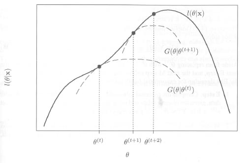

关于 EM 算法比较一般的形式可以参看以下的内容：
- wiki #Orz wiki 写的太清楚了，有机会重新写一些吧
- 刘建平的 Blog
- https://www.csuldw.com/
而这里我还是按照老师讲统计计算时候的思路进行笔记，可能和上述在形式上有一定的区别。
首先是算法要解决的问题，主要有两类：1. 存在删失数据 censored data （最典型的如医学上存活时间，或者是跟踪调查的时间，我们可能在一个时间点截止了，那么剩下的样本我们只知道其值大于一个数，但这个随机变量具体的取值我们不清楚），可分为左/右/双边删失；2. 隐变量 latent variables，我们无法观测到的变量，例如在 mixed model 中的混合系数（注意，我们必须要对这个变量有一定的了解，比如混合模型中成分的数量）。
一般情况下，我们希望用 MLE 对于参数进行估计，但在这两种情况下，我们没法得到似然函数的形式；然而，若我们把缺失/隐变量加入到模型中，似然函数的形式就明确下来了——然后，我们只需要使用期望将缺失/隐变量消去即可。
Idea: Reeplace a difficult likelihood maximization problem with a sequence of easier maximizations, where the limit of the sequence of maximizers is the solutions to the original one.
至于为什么 EM 算法是 iteration 的，之后会给出解释。
EM 算法
假设我们的观测为 \(y\) 我们希望得到的参数为 \(\theta\) ，即我们希望将下式最大化（简单起见已取对数）：
\[
\log f(y|\theta)
\]
因为其形式不好表达，我们利用条件概率公式转为
\[
\log f(y,u|\theta)=\log f(y|\theta)+\log f(u|y,\theta)\tag{1}
\]
注意看此公式，左侧可理解为 complete 似然，而右侧为 observed 似然，以及 randomness \(U|Y,\theta\) 。其中的 U 可理解为删失数据或隐变量。我们对两边取期望：
\[
\begin{align*}
E_u[\log f(y,u|\theta)|Y=y,\theta^*]&=l(\theta)+E_u[\log f(u|y,\theta)|Y=y,\theta^*]\\
&=l(\theta)+\int \log f(u|y,\theta) f_u(u|Y=y,\theta^*)du \\
Q(\theta, \theta^*) &= l(\theta) +C(\theta, \theta^*)\tag{2}
\end{align*}
\]
注意到，我们这里是对于 U 取期望，然而我们没有 U 的分布，因此我们利用观测 y 和上一步得到的 \(\theta^*\) 来近似 U 的分布（这也解释了为什么需要迭代求解）（注：这是我的粗浅的理解，但课上老师似乎对此不赞同，望 DL 指正）。这里就是 EM 算法总 E 的部分。需要注意的是：1. 我们感兴趣的是右侧的第一项对数似然，因为其较难求我们将转为对左式求 max；2. 注意式中的 \(\theta\) 和 \(\theta^*\) 是不同的，后者 U 的分布的参数，而前者是我们意欲求解的对象（为防止歧义，我特意将积分式写了出来）。
对（2）式分别取 \(\theta\) 和 \(\theta^*\) ，则有：
\[
l(\theta)-l(\theta^*)=Q(\theta, \theta^*)-Q(\theta^*, \theta^*) -[C(\theta, \theta^*)-C(\theta^*, \theta^*)]
\]
可以证明，最右侧那一项\(>0\) ：
\[
C(\theta, \theta^*)-C(\theta^*, \theta^*) = E_u \bigg[\log {f(U|Y,\theta) \over f(U|Y,\theta^*)}|Y=y,\theta^*)\bigg]\\ \le \log E_u \bigg[ {f(U|Y,\theta) \over f(U|Y,\theta^*)}|Y=y,\theta^*)\bigg]=\log(1)=0
\]
在证明中，我们用到了 Jensen 不等式，即对于凹函数 \(\log\) ，我们有\(E[f(X)]\le f(E(X))\) ，在第二行中，我们根据期望的定义展开即可得到（注意式中的 \(\theta\) 和 \(\theta^*\) 是不同的，不能直接把条件往里代）。
于是，有
\[
l(\theta)-l(\theta^*)\ge Q(\theta, \theta^*)-Q(\theta^*, \theta^*)\tag{1.3}
\]
也就是说，若 \(Q(\theta, \theta^*)>Q(\theta^*, \theta^*)\) （也就是 EM 算法中的 M 部分），则 \(l(\theta)>l(\theta^*)\)。当然，反过来不成立；也就是说，只能保证是局部最优解，而无法保证全局最优。
总结一下，对于最大化对数似然这个「hard」的问题，我们 reduced to iteratively \(\max Q(\theta, \theta^*)\) , which is "easy"。
一个直观的解释：

Steps
E-step: calculate \(Q(\theta, \theta^*) = E_u[\log f(y,u|\theta)|Y=y,\theta^*]\)
M-step: max \(\theta^{(t+1)} = \arg\max _\theta Q(\theta,\theta^*)\)
Iterative until \(|l(\theta^{t+1})-l(\theta^{t})|\) or \(||\theta^{(t+1)}-\theta^{t}||\over||\theta^{(t)}||\) converges.
两个例子
第一个例子是 mixed model：我们考虑正态混合模型，
\[
f(Y|\theta)=\sum_{r=1}^p \pi_rf_r(y|\theta_r)
\]
需要说明的是，对于混合参数 \(\pi_r\) 我们是不了解的，但我们知道混合的数量 p，因此，参数\(\theta\) 包含了混合参数和每一个的正态成分中的参数。我们定义随机变量 \(U\) 表示观测由哪一个成分生成。对于 EM 算法来说，最重要的就是求解似然函数和 U 的分布，我们先来表示一个观测时的分布：
\[
f(y,u|\theta) =\prod_{r=1}^p (\pi_rf_r(y|\theta_r))^{1_{\{U=r\}}}
\log f(y,u|\theta) = \sum_{r=1}^p{1_{\{U=r\}}}[\log\pi_r+\log f_r(y|\theta_r)]\tag{3}
\]
这还不是最终的形式，我们先来看看 U 的分布 \(U|Y,\theta^*\)
\[
P(U=r|Y=y,\theta^*)\propto P(U=r,Y=y,\theta^*)\\
=P(Y=y|U=r,\theta^*)P(U=r|\theta^*) = f_r(y|\theta^*)\pi_r^*\\
w_r(y,\theta^*)\overset{\triangle}{=}P(U=r|Y=y,\theta^*)={\pi_r^*f_r(y|\theta^*)\over\sum_s \pi_s^*f_s(y|\theta^*)}
\]
我们定义了权重函数 \(w_r(y,\theta^*)\) 。另外注意这只是一个观测时的情况，我们给出 Q 的最终形式
\[
\begin{align*}
Q(\theta, \theta^*) &= E_u[\log f(y,u|\theta)|Y=y,\theta^*]\\
&=\sum_{j=1}^n\sum_{r=1}^p w_r(y_j,\theta^*)[\log\pi_r+\log f_r(y_j|\theta_r)]\\
&=\sum_{r=1}^p \bigg(\sum_{j=1}^n w_r(y_j,\theta^*)\bigg)\log\pi_r+\sum_{r=1}^p \sum_{j=1}^n w_r(y_j,\theta^*) \log f_r(y_j|\theta_r)
\end{align*}
\]
注意到，相较于（3），我们除了给 y 加了角标求和之外，我们也把示性函数替换成了权重——这是因为，我们在（3）中仅给了在 U 取了一定定值时的情况，而若我们把 U 看做随机变量取期望，则可用上式的形式来表达。
这是 E-step，而在 M-step 中，对于右侧的第二个式子，我们代入正态分布的密度函数，求导即可；对于第一个式子，混合因子有约束 \(\sum\pi_r=1\)，因此可用 Lagrange 方法求出最大值：
\[
L=\sum_r a_r \log\pi_r+\lambda(\sum\pi_r-1)
\]
求导的 \(\pi_r=-{a_r\over\lambda}\) ，又知 \(\sum a_r=n\) ，因此
\[
\pi_r^+={1\over n}\sum_{j=1}^n w_r(y_j,\theta^*)\\
\mu_r^+={\sum_{j=1}^n w_r(y_j,\theta^*)y_j\over \sum_{j=1}^n w_r(y_j,\theta^*)}\\
\sigma_r^{2+}={\sum_{j=1}^n w_r(y_j,\theta^*)(y_j-\mu_r^+)^2\over \sum_{j=1}^n w_r(y_j,\theta^*)}
\]
第二个例子是 censored data ：模型为\(N(\theta,1)\)。假定我们的 observed 为 \(X=(x_1,...,x_m,a...,a)\) （把删失值记为 a，即观测 \(\ge a\) ），complete data 为\((x_1,...,x_m,z_{m+1},...,z_n)\) 。
似然函数为
\[
l(\theta|X,Z) = -{1\over2}\log(2\pi)-{1\over2}\sum^m_{i=1}(x_i-\theta)^2-{1\over2}\sum^n_{i=m+1}(z_i-\theta)^2
\]
而 \(Z|X,\theta^*\) 服从 trancated normal at level a from below
\[
f_z(z|X,\theta^*)={\exp(-{1\over2}(z-\theta^*))\over\sqrt{2\pi}(1-\Phi(a-\theta^*))}
\]
\[
\begin{align*}
Q(\theta, \theta^*) &= E_u[\log l(\theta|y,u)|X,\theta^*]\\
&= -{1\over2}\log(2\pi)-{1\over2}\sum^m_{i=1}(x_i-\theta)^2-{1\over2}\sum^n_{i=m+1}\int(z_i-\theta)^2 f_{z_i}(z_i|x,\theta^*)dz_i
\end{align*}
\]
上为 E-step，对于 M-step，我们对 \(\theta\) 取导数
\[
m\bar{x}-m\theta+(n-m)(E[z|X,\theta^*]-\theta)=0
\]
注意的，对于 trancated normal dist. 来说，其期望为 \(E[z|X,\theta^*]=\theta^*+{\phi(a-\theta^*)\over 1-\Phi(a-\theta^*)}\) 。因此有更新公式
\[
\theta^+={m\over n}\bar{x}+{n-m\over n}(\theta^*+{\phi(a-\theta^*)\over 1-\Phi(a-\theta^*)})
\]
最终，给出一些 EM 算法的优缺点，课程网页上的内容老师也没讲，在此不多解释：
EM算法的优点
EM算法是数值稳定的, EM算法的每一次迭代会增加对数似然.
在非常一般的条件下, EM算法有可靠的全局收敛性, 即从参数空间的任何初始值出发, EM算法 一般总能收敛到对数似然函数的一个局部最大值点.
EM算法很容易实施,每一次迭代中的E步是对完全似然的期望, 而M步是完全数据的ML估计. 其经常 有closed form.
EM算法是容易进行程序设计的, 因其只涉及到似然函数, 而不需要其导数.
EM算法在计算机上实施时需要的存储空间很小, 其在每步迭代中不需要存储信息阵或者其导数等.
由于完全数据问题一般是一个标准问题, 因此在完全数据的MLE不存在显式解时, M步经常可以使用标准的统计方法来解决此问题. 一些扩展的EM算法就是基于此.
相比其他优化方法而言, EM算法需要的分析计算工作一般不太多, 其只要求完全对数似然的条件期望和最大化.
每一个迭代的成本是比较低的, 其抵消了EM算法需要很大迭代次数以达到收敛的不足之处.
通过监视每次迭代对数似然的单调性, 可以方便的监视收敛性和程序错误等.
EM算法可以用于对“缺失”值进行估计.
对EM算法的一些批评
不能自动给出参数估计的协方差矩阵的估计.
在一些看起来很简单的问题或者包含太多缺失信息的问题里, EM算法可能收敛很慢.
当存在多个极值点时, EM算法不能保证收敛到全局最大值点, 此时, 收敛到的极值点依赖于初始值.
在一些问题里, EM算法需要的E步或者M步可能不能给出分析解.